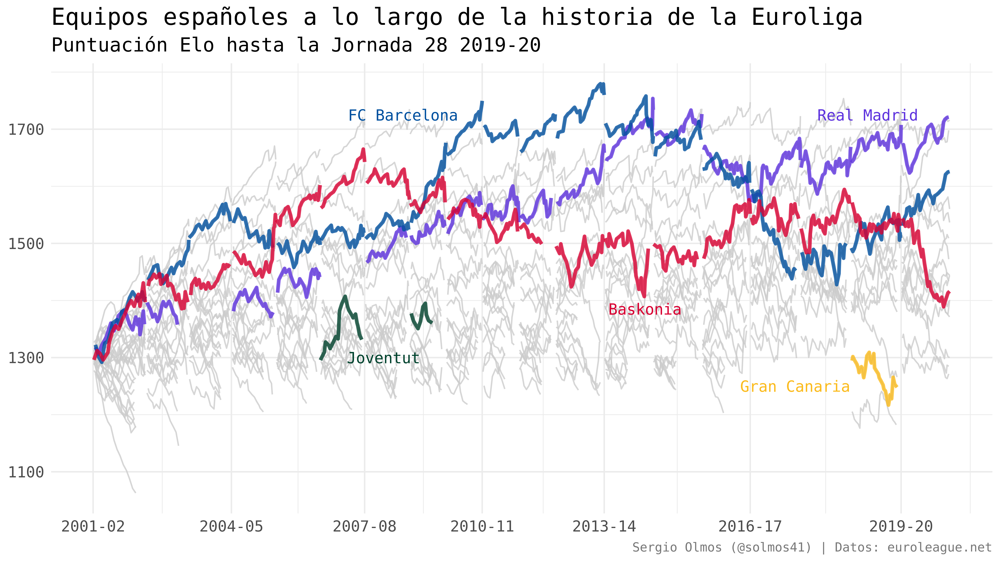

El otro día me puse a construir un modelo de probabilidad de victoria para la Euroliga pero pronto me topé con un problema. Este tipo de modelos utiliza una serie de covariables para predecir la probabilidad de victoria de un equipo a medida que avanza un partido. Una de estas covariables suele ser algún tipo de indicador de lo bueno que es un equipo antes del partido. Muchos de estos modelos utilizan las cuotas de las casas de apuestas como indicador. Algunos otros utilizan algún tipo de sistema de puntuación que asigna un valor númerico a cada equipo en base a los resultados.
Necesitaba obtener algún indicador de este tipo para todos los partidos disputados en la Euroliga desde el 2001. En lugar de ensuciarme las manos en el código HTML de los portales de apuestas, decidí construir un sistema de puntuación Elo para la Euroliga, que es mucho más divertido y puede ser interesante en sí mismo.
Sistema de puntuación Elo
El sistema de puntuación Elo es un método para estimar la habilidad relativa de jugadores o equipos en juegos de suma cero. Este método se inventó como un sistema de puntuación para jugadores de ajedrez, pero posteriormente se ha utilizado en multitud de deportes como el fútbol, el tenis, el baloncesto o el Scrabble.
Las ideas básicas de un sistema Elo son:
La puntuación (Elo) del equipo se actualiza después de cada partido.
Los equipos ganan puntos Elo cuando ganan partidos y pierden puntos Elo cuando pierden partidos. El sistema es de suma cero, lo que quiere decir que el ganador y el perdedor ganan y pierden el mismo número de puntos Elo, respectivamente.
El valor de cada victoria o derrota depende de la calidad relativa del rival.
A partir de estas ideas básicas podemos construir un sistema de puntuación que nos indique la calidad de los equipos de Euroliga a lo largo de la historia.
A continuación voy a explicar los detalles del modelo que he construido.
Algoritmo básico
Para actualizar la puntuación Elo de un equipo después de un partido se le añade o se le resta un número de puntos que viene determinado por la diferencia entre el resultado real y el resultado esperado por el sistema según las puntuaciones Elo de los dos equipos antes de empezar el partido.
Vamos a expresar este algoritmo formalmente. Si \(R_A\) es la puntuación Elo del equipo A antes del partido y \(R'_A\) es la puntuación Elo del equipo A después del partido, la ecuación básica que actualiza la puntuación Elo de un equipo después de un partido es
\[R'_A = R_A + k (S_A - P_A)\]
donde
\(k\) es un parámetro a estimar.
\(S_A\) asigna un valor entre 0 y 1 según derrota o victoria respectivamente.
\(P_A\) es la probabilidad de victoria del equipo A esperada por el modelo.
A continuación veremos qué son realmente los elementos \(P_A\) y \(k\) de esta ecuación y añadiremos algunos ajustes que podrían ayudar a que nuestro sistema de puntuación sea más predictivo.
Probabilidad de victoria esperada
Para cada partido, nuestro sistema de calificación Elo asigna una probabilidad de victoria a cada equipo según la diferencia de puntos Elo entre los dos equipos. La probabilidad de que un equipo A gane un partido contra equipo B viene dada por
\[P_A = \frac{1}{1 + 10^{-\Delta_{AB} / s}}\] donde \(\Delta_{AB}\) es la diferencia de puntos Elo entre el equipo A y el equipo B y \(s\) es un parámetro de escalado de la función. La diferencia de puntos Elo, \(\Delta_{AB}\), incluye los diferentes ajustes que incorporaremos más adelante para tener en cuenta cosas como qué equipo juega en casa.
Esta función sigmoide resulta en valores entre 0 y 1, por lo que es apropiada para estimar probabilidades. Para entender cómo funciona esta función, podemos dibujarla en un gráfico para distintos valores de \(\Delta_{AB}\) y \(s\).

Podemos observar que cuanto menor es el valor del parámetro \(s\), la probabilidad de victoria cambia mucho más rápido a medida que la diferencia absoluta en puntos Elo aumenta. Queremos elegir un valor de \(s\) que resulte en probabilidades de victoria que concuerden lo máximo posible con los resultados de los partidos. Más adelante explico cómo elijo este valor.
Diferencia de puntos Elo
Como hemos visto, la probabilidad de victoria depende de la diferencia de puntos Elo entre los dos equipos que juegan el partido.
Siguiendo la notación anterior, la diferencia de puntos Elo entre dos equipos, \(\Delta_{AB}\), viene dada por \[\Delta_{AB} = R_A - R_B\]
Sin embargo, ya mencioné que en esta diferencia podemos incluir ciertos ajustes que puden influir en las opciones de victoria. Para este modelo simplemente voy a tener en cuenta si se juega en casa o fuera. Pero en un futuro espero poder incluir algunos ajustes más como la distancia que ha tenido que viajar el equipo visitante.
Como todos sabemos, el equipo que juega en casa parece tener una ligera ventaja. La diferencia de puntos entre equipos locales y visitantes es de alrededor de +4 puntos.

Para incluir este factor en el modelo, debemos introducir una variable \(H_A\) que reduzca en la diferencia de puntos Elo, \(\Delta_{AB}\), cuando equipo A juega en casa y que la aumente cuando equipo A juega en casa del equipo B. También deberemos tener en cuenta que en ocasiones como la Final Four, ambos equipos pueden jugar fuera de casa en tal caso la diferencia quedará inalterada.
Esto es,
\[\Delta_{AB} = R_A + H_A - R_B\]
donde
\[H_A = \cases{ h, &\text{ si equipo A juega en casa.} \\ -h, &\text{ si equipo A juega en casa de B.} \\ 0, &\text{ si ambos equipos juegan fuera de casa.} }\]
Mostraré cómo he elegido el valor de \(h\) más adelante.
Margen de victoria
Otro aspecto a tener en cuenta a la hora de otorgar puntos al ganador/perdedor de un partido es por cuántos puntos ha ganado/perdido ese equipo. Podemos introducir un multiplicador en la ecuación principal del modelo que asigne más puntos a victorias/derrotas amplias que a victorias/derrotas ajustadas, permaneciendo el resto de variables constante.
De esta forma actualizaremos la puntuación Elo según la siguiente ecuación:
\[R'_A = R_A + k \times m_{A}(S_A - P_A)\]
La variable \(m_A\) es el multiplicador por margen de victoria y viene dado por
\[m_{A} = \frac{(d + 3)^{0.8}}{7.5 + 0.006 \Delta_{AB}}\] donde \(d\) es la diferencia de puntos anotados en el partido entre el equipo A y el equipo B en valor absoluto. Esta fórmula la he sacado del modelo Elo para la NBA de FiveThirtyEight.
Esta fórmula un tanto extraña tiene en cuenta que la diferencia de puntos de los equipos favoritos en las vicorias tienden a ser más grande que en las derrotas. Si no tenemos en cuenta esto estaríamos introduciendo un elemento de autocorrelación que haría las puntuaciones menos estables.
Evolución temporada a temporada
La última pieza del modelo que tenemos que definir es en qué medida se conservan las puntuaciones Elo de una temporada a la siguiente. En la primera temporada de la que tenemos datos, la 2001/2002, todos los equipos empiezan con una puntuación Elo de 1300. Una vez acabada esa temporada los equipos terminarán con una puntuación distinta a la que empezaron. Volver a asignar 1300 puntos a todos los equipos al inicio de la siguiente temporada conllevaría deshechar valiosa información ya que es muy probable que un buen/mal equipo en una temporada sea también bueno/malo la siguiente.
Recalcar que muchos equipos tienen temporadas intermedias en las que no participaron en Euroliga. Cuando vuelven a competir en la Euroliga, la última puntuación Elo que obtuvieron es la que tomo de referencia, en lugar de devolver a este equipo a los 1300.
Aun así, quizás no sea lo ideal asignar exactamente la misma puntuación con la que acabaron la temporada. Temporadas muy buenas o malas tienden a volver hacia la media. Podemos calcular la puntuación Elo inicial como una media ponderada entre la puntuación final y la media de todos los equipos a lo largo de todos las temporadas. Colocamos la media histórica en 1500 puntos Elo.
Así pues, la puntuación del equipo A al iniciar una nueva temporada será
\[R^*_{A} = w R_A + (1 - w)1505\] donde \(w \in (0, 1)\) es el peso que asignaremos a la puntuación del equipo al acabar la temporada, \(R_A\). Nótese que hemos puesto 1505 en lugar de 1500 para tener en cuenta que cada año se incorporaban nuevos equipos a la liga, comenzando con una puntuación Elo de 1300 y bajando la media más de lo que querríamos.
Con esta definición, valores de \(w\) cercanos a 1 quieren decir que los equipos son bastante consistentes de una temporada a otra, mientras que valores de \(w\) más cercanos a 0 indican que la puntuación al acabar la temporada de un equipo aporta poca información para la siguiente temporada.
Parámetros del modelo
Como hemos visto, debemos asignar un valor a varios parámetros de nuestro sistema de puntuación Elo. Para ello necesitamos una forma de evaluar la precisión del modelo.
No he conseguido encontrar ejemplos de optimización en este tipo de modelos. Lo único que se me ha ocurrido es utilizar una búsqueda por cuadrícula con valores razonables de los parámetros. Este método consiste en construir una cuadrícula con todas las combinaciones posibles de los valores especificados de cada parámetro y evaluar con una función de precisión o de pérdida qué parametros maxifican o minimizan esta función respectivamente.
La función de precisión que he elegido es la proporción de predicciones de victoria correcta, si elegimos como ganador al equipo con mayor puntuación Elo teniendo en cuenta la ventaja por jugar en casa.
No estoy seguro de que esta función de precisión sea la apropiada. En una futura versión del modelo, probaré otro tipo de criterios para evaluarlo. Aún así, obtengo resultados a simple vista razonables y una precisión de acierto del 70%.
Los valores que he elegido para los parámetros del modelo son \(k = 25\), \(s = 400\), \(h = 100\) y \(w = 0.8\). Un valor de 25 para \(k\) es bastante alto para este tipo de modelos y provoca que el modelo reaccione fuertemente a los resultados de cada partido. Esto también quiere decir que las rachas son bastante indicativas de la calidad de un equipo y que no es simplemente suerte.
Puedes echarle un ojo al código de todo el modelo aquí.
Limitaciones del modelo
El sistema de puntuación Elo es muy simple: solo tiene en cuenta la calidad del rival y el resultado al acabar el partido. Aunque ha demostrado ser una forma muy adecuada de evaluar equipos, esta simpleza conlleva una serie de limitaciones. El modelo no sabe cuando hay lesiones o fichajes, por lo que no cambia la puntuación automáticamente cuando algo así ocurre. A medida que pasan los partidos el sistema en teoría detectará estos cambios a traves de los resultados obtenidos. Sin embargo, es posible que tarde algunas jornadas en detectar la mejoría o empeoramiento del equipo.
Resultados
A continuación muestro la evolución de la puntuación Elo para todos los equipos de la historia hasta la jornada 28 de la actual temporada 2019-20 y resaltando varios equipos españoles.

Algunas observaciones rápidas al ver este gráfico:
El mejor equipo de la historia de la Euroliga según mi modelo Elo fue el FC Barcelona de la temporada 2012-13.
El Real Madrid comenzó a juntarse con la elite de Europa una temporada después de la entrada de Laso como entrenador.
El Real Madrid de la actual temporada es el lider en puntuación Elo tras 28 jornadas, con casi los mismos puntos que el Anadolu Efes Istambul, a pesar de que los turcos tienen dos victorias más.
¿Os parecen razonables los resultados?
Futuros pasos
Construir una aplicación web con Shiny que permita interactuar con este gráfico para explorar mejor los resultados.
Explorar mejores formas de optimizar los parámetros del modelo.
Simular los resultados de lo que queda de la actual temporada con las puntuaciones Elo obtenidas.